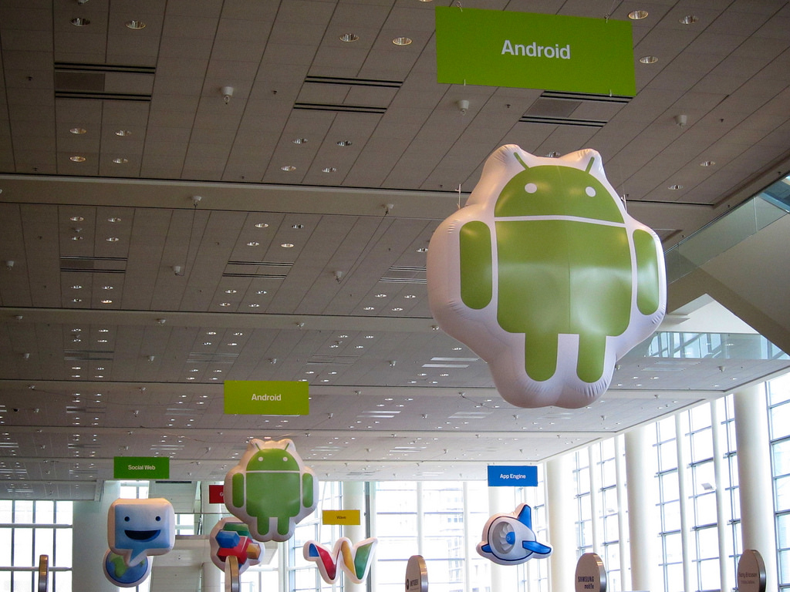
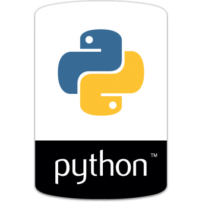
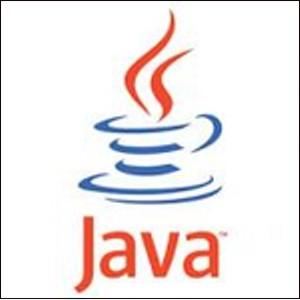
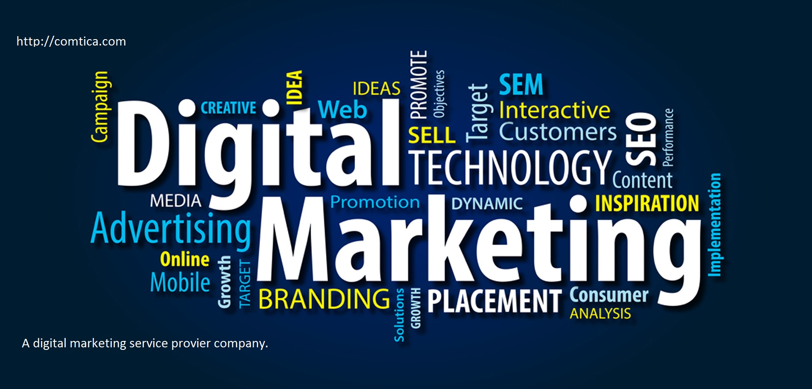
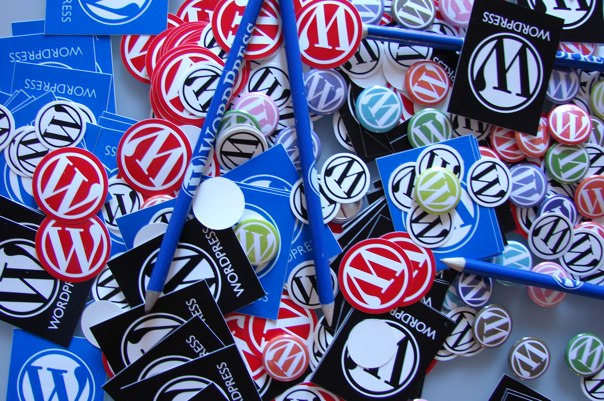

Front-end development refers to constructing what a user sees when they load a web application the content, design and how you interact with it.
this is done with three codes HTML, CSS and JavaScript.
HTML, short for Hyper Text Markup Language, is a special code for marking up text in order to turn it into a web page.Every web page on the net is written in HTML, and it will form the backbone of any web application.
CSS, short for Cascading Style Sheets, is a code for setting style rules for the appearance of web pages. CSS handles the cosmetic side of the web.
JavaScript is a scripting language that is widely used to add functionality and interactivity to web pages.

WHAT IS ANDROID?
Android is an open source and Linux-based Operating System for mobile devices such as smartphones and tablet computers.
Android was developed by the Open Handset Alliance, led by Google, and other companies.
Android offers a unified approach to application development for mobile devices which means developers need only develop for Android, and their applications should be able to run on different devices powered by Android.
Features of Android:
Android is a powerful operating system competing with Apple 4GS and supports great features.
Beautiful UI
Connectivity
Media support
Messaging

WHAT IS PYTHON?
Python is a high-level, interpreted, interactive and object-oriented scripting language. Python is designed to be highly readable.
It uses English keywords frequently where as other languages use punctuation, and it has fewer syntactical constructions than other languages.
Python is Interpreted - Python is processed at runtime by the interpreter. You do not need to compile your program before executing it.
Python is Object-Oriented - Python supports Object-Oriented style or technique of programming that encapsulates code within objects.
Python is a Beginner's Language - Python is a great language for the beginner-level programmers and supports the development of a wide range of applications from simple text processing to www browsers to games.

WHAT IS JAVA?
Java is an object-oriented programming language developed by Sun Microsystems
, and it was released in 1995.
Java is a set of features of C and C++. It has obtained its format from C, and OOP features from C++.
Java programs are platform independent which means they can be run on any operating system with any processor as long as the Java interpreter is available on that system.
Java code that runs on one platform does not need to be recompiled to run on another platform; it's called write once, run anywhere(WORA).
WHAT IS SOFTWARE TESTING?
Software testing is an investigation conducted to provide stakeholders with information about the quality of the product or service under test
Software testing can also be stated as the process of validating and verifying that a software program/application/product:
meets the business and technical requirements that guided its design and development;
works as expected; and
can be implemented with the same characteristics.
Software testing, depending on the testing method employed,can be implemented at any time in the development process.
WHAT IS MACHINE LEARNING?
Machine learning is a very hot topic for many key reasons, and because it provides the ability to automatically obtain deep insights
Recognize unknown patterns, and create high performing predictive models from data, all without requiring explicit programming instructions.
There are many different types of machine learning algorithms, with hundreds published each day, and they are typically grouped by either learning style (i.e. supervised learning, unsupervised learning, semi-supervised learning)
WHAT IS IOT?
The Internet of Things (IoT) is the network of physical devices, vehicles, home appliances, and other items embedded with electronics, software, sensors, actuators, and connectivity which enables these things to connect and exchange data, creating opportunities for more direct integration of the physical world into computer-based systems, resulting in efficiency improvements, economic benefits, and reduced human exertions.
Consumer Application
A growing portion of IoT devices are created for consumer use, including connected vehicles, home automation/smart home, wearable technology, connected health, and appliances with remote monitoring capabilities.
WHAT IS .NET?
.NET provides a simple object-oriented model to access most of the Windows application programming interfaces (APIs). It also provides mechanisms by which you can use the existing native code. In addition, it significantly extends the development platform by providing tools and technologies to develop Internet-based distributed applications.
The .NET platform is an integral component of the Microsoft Windows operating system for building and running next generation software applications and Web services.It provides such advantages as multiplatform applications, automatic resource management, and simplification of application deployment.
WHAT IS IOS?
The IOS applications has redefined the concept of mobile app development paradigm all around the world and Evolet Technologies has provided innovative and world class iPhone applications.
Evolet Technologies is one of the top iOS (iPhone, iPad) Apps Development Company, backed by brilliant developers, who have collaborated innovative ideas in workflow of iOS app development With the help of flexible workflow and excellent knowledge base, we provide comprehensive mobile applications that can automate every kind of job related to business and personnel lifestyle.
WHAT IS ERP?
Enterprise Resource Planning, refers to creating a more efficient, leaner, better-automated and integrated business through sophisticated technology solutions.ERP software then, is a business management technology solution that businesses and manufacturers use to collect, store, manage, and communicate data.
Benefits of this service:
ERP Includes Master Data, Purchase, Sales, Inventory, Production, Financial Accounting (FA), Detailed MIS (Management Information Services) Reports etc. Modules and depending on the nature of your business, modules can be customized.
Web Enabled Application which can run on a Local Server as well as on Internet/Intranet using Browser Environment.
Improve compliance with strong traceability.
Reduces IT costs and delivers automated ERP upgrades.

WHAT IS DIGITAL MARKETING?
Digital Marketing can be understood as a well-targeted, conversion-oriented, quantifiable, and interactive marketing of products or services by utilizing digital innovation to achieve the customers, and transform them into clients in a sustainable fashion. The whole concept and functionalities of Digital Marketing are more competent, effective, result-oriented and measurable, which make it very different from traditional marketing.
Communication is bidirectional in Digital Marketing as businesses can communicate with customers and customers can ask queries or make suggestions to businesses as well.
Medium of communication is more powerful and involves social media websites, chats, apps and Email.
Digital marketing campaigns can be developed quite rapidly and with digital tools, channelizing Digital Marketing campaigns is easier.

WHAT IS WORDPRESS?
WordPress is a free and open-source content management system (CMS) based on PHP and MySQL.[4] Features include a plugin architecture and a template system. It is most associated with blogging, but supports other types of web content including more traditional mailing lists and forums, media galleries, and online stores.
Wordpress an open source package that gives a simple, neat and edgy touch to any website.
It is popular for its responsive designs, customization with plugins and themes, flexibility, and because it has the largest share in the CMS market.
Evolet technologies development team masters in Wordpress website development. Our team understands the value of a website which is responsive, user-friendly and is a return investment for the client.